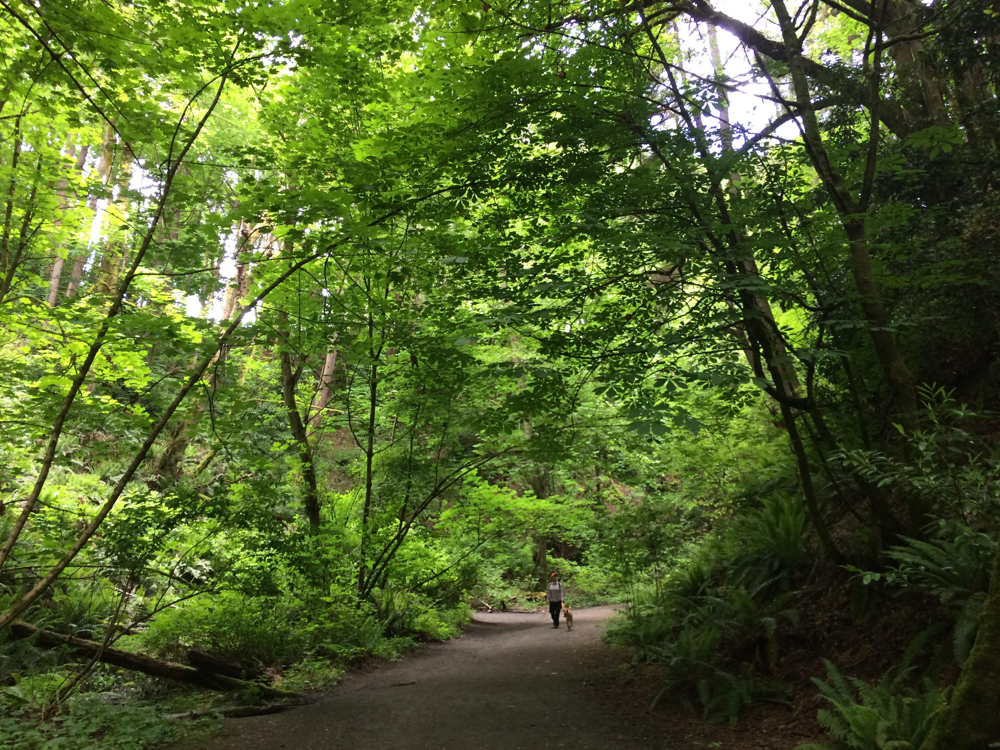

Metro Parks Tacoma: Facility Siting Study
Purpose
This study is designed to identify potential locations for future parks, open spaces or community centers in Tacoma. It identifies gap areas that are outside of a 10-minute walk to existing Metro Parks facilities. These gap areas are further analyzed to find concentrations of low Equity Index scores and/or high population densities of young children and families. These areas would be ideal locations to prioritize Tacoma’s next park, community center or green space.

Background
The city of Tacoma boasts nearly 3,000 acres of open spaces, parks and community centers that are managed by Metro Parks Tacoma. Numerous studies show access to these amenities is associated with a higher prevalence of physical activity. Furthermore, those who travel to parks on foot or bike, especially children and adolescents, are more active in the park setting than those arriving by other means.
The city of Tacoma, working with the Trust for Public Land, is endeavoring to provide a park or open space within a 10-minute walk of every citizen. Metro Parks Tacoma (MPT) teamed with the University of Washington Tacoma to determine which areas of the city fall short of this goal and to prioritize potential locations for new parks, open spaces and community centers.
Assumptions and limitations
• Spatial extent for the study: The city of Tacoma plus a half-mile buffer.
• “Facilities” are limited to Metro Parks Tacoma land including parks, playgrounds and community centers.
• The study does not include paid facilities such as golf courses, museums or zoos.
• The study does not include gardens, dog parks or other limited-service areas.
• The study does not include playgrounds or green spaces that aren’t owned or maintained by Metro Parks Tacoma, such as school playgrounds.
• Walking speed is assumed to be three miles per hour.
• Populations are, on average, evenly spaced throughout U.S. Census block groups.
Step One: Identify the gap areas
Areas that are outside a 10-minute walk to any Metro Parks facilities are gap areas. Defining these areas was a key, first step in the process. 40 percent of Tacoma’s geography falls within gap areas.
Methodology: Identifying gap areas first required mapping out the Metro Parks facilities and the territories they serve. ArcMap was used to create service areas that represented a 10-minute walk to any existing Metro Parks facility. The road network was extended outside Tacoma’s borders by one-half mile to reduce the edge effect and arterial routes (e.g. freeways) were classified as barriers. The results were exported to Mapbox Studio to create the base map, Figure 1.
Those areas not currently served by Metro Parks facilities are the gap areas (represented in gray) and they are the focus of this study.
Step Two: Apply the Tacoma Equity Index
The Equity Index is a form of opportunity mapping that highlights obstacles connected to upward mobility. It is a primary tool for city staff and decision makers to address access to opportunity for all Tacoma residents. Created by the Kirwan Institute for the Study of Race and Ethnicity, the Equity Index aggregates 20 indicators within four categories: accessibility, economy, education and livability.
The Overall Equity Index rates opportunity into categories ranging from very high to very low. Very high equity represents locations that have access to better opportunities to succeed. The data indicators include high performing schools, a safe environment, access to adequate transportation, safe neighborhoods and sustainable employment. In contrast, low equity areas have more obstacles and barriers. These communities have limited access to institutional or societal investments.
Methodology: ArcMap was used to conduct hot spot analysis on Tacoma’s overall Equity Index scores for the gap areas. This tool identified concentrations of high and low scores on the map. The results were exported to a Web mapping language and applied to the Mapbox base layer to create Figure 2.
Hot spot analysis showed two clusters of very high Equity Index scores in North End and Northeast Tacoma (labeled in red). This analysis also illuminated a cluster of very low Equity Index scores in South End and South Tacoma (shown in blue).
Step Three: Identify high population density areas
Population density, or residents per square mile, is an important factor in maximizing limited resources. More people can be served when first addressing areas with higher population densities. Cluster analysis of data from the U.S. Census Bureau was key to identifying population density in two categories: total population and youth population (i.e. children and adolescents under 18 years old).
Methodology: 2018 Census data for populations in Census block groups encompassing Tacoma was the most current available and coincided with the 2018 Equity Index. Even though they do not line up with the city boundaries, block groups were kept whole to enable accurate density calculations. (Note: for visual clarity, the final map in Figure 3 was clipped to Tacoma’s borders after completing analyses.)
Two rounds of ArcMap hot spot analyses of block groups in the gap areas showed areas of high density for the total population and the youth population. Results from both analyses were combined and exported to create Figure 3.
A high total population density cluster appeared in the North End (shown in red), which includes the University of Puget Sound campus. Meanwhile, a high youth population density cluster appeared in the South End (also shown in red), which includes the Helen B. Stafford Elementary School.
Step Four: Analyze specific populations by Equity Index
The study, so far, had defined gap areas, identified clusters of high and low Equity Index areas and identified hot spots of total and youth population density. The final step involved analyzing these data together. That required looking at specific populations within parts of Census block groups within the gap areas. One-third of Tacoma’s total population, or 71,209 people, live in the gap areas. This includes 15,154 youths.
Methodology: Clipping block groups to conform with the Tacoma city border and the gap areas required averaging the total and youth populations across the area of each block group. For example, if 30 percent of a block group’s geographic area fell within Tacoma, then 30 percent of the block group’s population was assumed to reside within Tacoma. Using this method to clip block groups to the Tacoma city boundary was accurate to within one percent of the U.S. Census Bureau’s published total. It was reasonable to assume further clipping of block groups to the gap areas was similarly accurate.
When population counts are correlated to the five Equity Index categories (very high to very low), each category should be expected to have similar numbers of people. However, there was a slightly elevated percentage of residents living in very low Equity Index areas compared to the average. This elevated number was exacerbated in the gap areas. While 34 percent of the total population lives in the gap areas, 40 percent of the total very low Equity Index population resides there. That number jumps significantly for the youth population. While 34 percent of the youth population lives in the gap areas, 45 percent of the youth very low Equity Index population resides there.
Youth Populations in the Gap Areas by Equity Index
Even more telling, one third of all the youth population living in the gap areas come from the very low Equity Index score. This is more than twice as many youths in the very high, high or moderate Equity Index scores. Specifically, an average of 3,031 youths from each Equity Index category live in the gap areas. However, 5,214 youths from the very low Equity Index category live in the gap areas.
Conclusion
Two zones within the gap areas make good candidates for Tacoma’s next park or community center.
A new Metro Parks facility in the North End would serve a high total population cluster (denoted in red on Figure 4). It coincides with very high Equity Index scores (shown in red on Figure 2).
A new Metro Parks Facility in the South End would benefit a high youth population cluster (shown in blue on Figure 4). This area coincides with very low Equity Index scores (shown in blue on Figure 2). There were no parks or open lands south of that location (i.e. outside Tacoma) to serve this population group.
This option most closely aligns with the purpose of this study.
Special Thank You
Renee Opatz of Metro Parks Tacoma; Dr. Emma Slager and Dr. Matthew Kelley of the University of Washington Tacoma
Geospatial Data
Metro Parks Tacoma, City of Tacoma GeoHub Portal, Pierce County Open Geospatial Data Portal, Washington Geospatial Open Data, U.S. Census Bureau